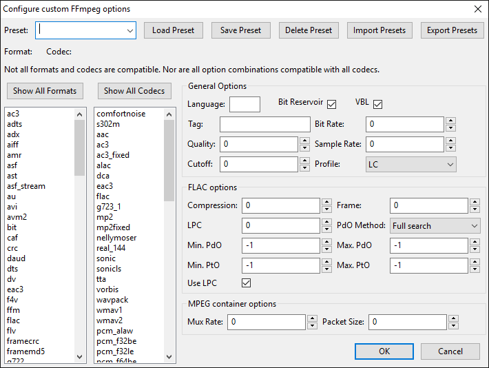

Custom FFmpeg Export Options
The Custom FFmpeg format options dialog appears in response to the button in the Export Audio or Export Multiple dialog's Options pane when you have chosen Custom FFmpeg Export in the Save as type dropdown.
- 
Presets
You can save and load presets for custom FFmpeg export choices. You can also export already saved presets to an external XML file and import presets from this file, thus allowing you to share presets with other users.
Select both a format and a codec from the respective lists. Then click on the black triangle at the right of the text box to open the Preset: dropdown menu and select the saved preset required. You will also then need to use the button for the selected preset to become active.
- : Loads the selected preset into Audacity for use in the subsequent audio export.
- : Saves a single preset to Audacity's internal storage. Type a name for the preset in the box next to Preset:. If you save a preset with a name that already exists, Audacity will ask if you want to overwrite it. Saved presets are stored in a file called "ffmpeg_presets.xml" in the Audacity data directory:
- Windows: Users\<username>\AppData\Roaming\Audacity
- Mac: ~/Library/Application Support/audacity/
- Linux: ~/.audacity-data/.
- : Removes the selected preset in the Preset: dropdown from Audacity's internal storage.
- : Imports an existing set of one or more presets from an external XML file. Imported presets will be added to your existing list of presets. If an imported preset has the same name as an existing preset, Audacity will ask if you want to overwrite that existing preset with the settings of the imported preset.
- : Exports all the currently saved presets as an external XML file to a file name and folder of your choice. To export a new or modified preset you must first use to save it.
Format and Codec pair selected for export
The line below the Presets controls always shows the "Format:" and "Codec:" that will be used for the export, exactly as selected in the Formats and Codecs lists underneath. If you load a preset, this line will change to the format and codec that were saved by that preset.
In the image at the top of this page, the format/codec line is empty because no format or codec selection has yet been made.
The actual formats and codecs available in the lists depend entirely on the options with which your copy of FFmpeg has been compiled.
List of Formats
In the Formats list box on the left of the dialog, click to select the format you want to use. Note that selecting any particular format may reduce the adjacent list of codecs, because not all codecs work with all formats.
If you cannot find the desired Format, press the button, but note that the dialog will not allow selection of incompatible format/codec pairs.
List of Codecs
In the adjacent Codecs list box, click to select the codec you want to use with the selected format. You can click to select a codec first but clicking on any particular codec may reduce the list of formats because not all formats work with all codecs.
If you cannot find the desired Codec, press the button, but note that the dialog will not allow selection of incompatible format/codec pairs.
General Options
This pane has options that are configurable for all format and codec combinations. For any particular combination of format and codec some options may not be available and they will be grayed out. Hover over the options (the input box not the text label) to see an explanation of what they do, and recommended settings. If an option is grayed out, it does not apply to the selected format/codec.
FLAC Options
This pane has options that are only available when you select FLAC as your codec. For all other codecs this pane's options will be grayed out.
MPEG container Options
This pane has options that are only available when you select mpeg as your format. For all other formats this pane's options will be grayed out.
Example
Custom FFmpeg Export provides a way to specify the bit rate of exported M4A (AAC files) which is not currently possible by choosing "M4A (AAC) Files" in the Export Audio dialog.
- Select mp4 in the Formats list.
- Select libvo_aacenc in the Codecs List.
- In Bit Rate: in the General Options pane, enter a bit rate up to 320 kbps expressed in bits per second. For example, to export at 280 kbps, enter "280000" (without quotes).
- Click the button.
- Back in the Export Audio dialog, enter your desired file name then add "m4a" (without quotes) at the end of the name.
Limitations and Disclaimer
| Audacity aims to provide the same exporting/importing features as FFmpeg. That is, you should be able to use Audacity to transcode audio with the same results as using FFmpeg directly. This also means that if FFmpeg cannot perform a particular conversion, Audacity cannot do it either. The limitations apply to both specific formats and codecs and to their metadata. In particular, FFmpeg can only export about two-thirds of the formats that it can import. Possibly incomplete information about known limitations can be seen at https://wiki.audacityteam.org/wiki/FFmpeg_integration#Functionality. One way to test if there is a problem in the Audacity implementation of FFmpeg is to use a command-line version of FFmpeg separately to perform the same task. If it fails in FFmpeg, then Audacity has the same limitation. |